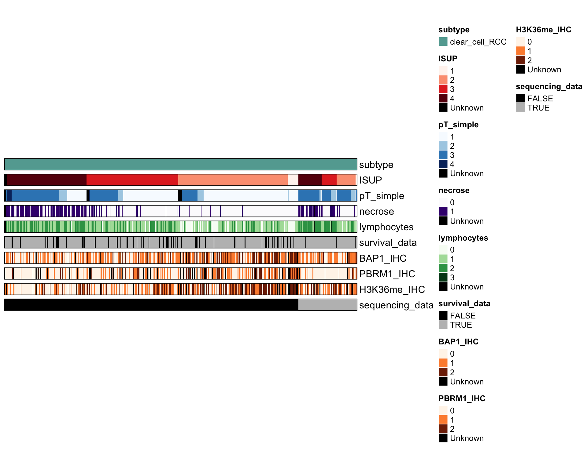

Metadata_ccRCC
Lasse Meyer
2022-02-01
Last updated: 2022-02-01
Checks: 7 0
Knit directory: Non_IMC/
This reproducible R Markdown analysis was created with workflowr (version 1.7.0). The Checks tab describes the reproducibility checks that were applied when the results were created. The Past versions tab lists the development history.
Great! Since the R Markdown file has been committed to the Git repository, you know the exact version of the code that produced these results.
Great job! The global environment was empty. Objects defined in the global environment can affect the analysis in your R Markdown file in unknown ways. For reproduciblity it’s best to always run the code in an empty environment.
The command set.seed(20220112) was run prior to running the code in the R Markdown file. Setting a seed ensures that any results that rely on randomness, e.g. subsampling or permutations, are reproducible.
Great job! Recording the operating system, R version, and package versions is critical for reproducibility.
Nice! There were no cached chunks for this analysis, so you can be confident that you successfully produced the results during this run.
Great job! Using relative paths to the files within your workflowr project makes it easier to run your code on other machines.
Great! You are using Git for version control. Tracking code development and connecting the code version to the results is critical for reproducibility.
The results in this page were generated with repository version 1092e11. See the Past versions tab to see a history of the changes made to the R Markdown and HTML files.
Note that you need to be careful to ensure that all relevant files for the analysis have been committed to Git prior to generating the results (you can use wflow_publish or wflow_git_commit). workflowr only checks the R Markdown file, but you know if there are other scripts or data files that it depends on. Below is the status of the Git repository when the results were generated:
Ignored files:
Ignored: .DS_Store
Ignored: IMC/.DS_Store
Ignored: IMC/.Rhistory
Ignored: IMC/.Rproj.user/
Ignored: Non_IMC/.DS_Store
Ignored: Non_IMC/.Rhistory
Ignored: Non_IMC/.Rproj.user/
Ignored: Non_IMC/analysis/.RData
Ignored: Non_IMC/analysis/.Rhistory
Ignored: Non_IMC/data/.DS_Store
Untracked files:
Untracked: IMC/analysis/01_lib_read_data.Rmd
Untracked: IMC/analysis/02_spillover_correction.Rmd
Untracked: IMC/analysis/03_QC.Rmd
Untracked: IMC/analysis/04_singlecell_analysis.Rmd
Note that any generated files, e.g. HTML, png, CSS, etc., are not included in this status report because it is ok for generated content to have uncommitted changes.
These are the previous versions of the repository in which changes were made to the R Markdown (Non_IMC/analysis/Metadata_ccRCC.Rmd) and HTML (Non_IMC/docs/Metadata_ccRCC.html) files. If you’ve configured a remote Git repository (see ?wflow_git_remote), click on the hyperlinks in the table below to view the files as they were in that past version.
| File | Version | Author | Date | Message |
|---|---|---|---|---|
| Rmd | 1092e11 | lassedochreden | 2022-02-01 | wflow_publish(c("analysis/index.Rmd", "analysis/Metadata_ccRCC.Rmd", |
| html | ab5bae0 | lassedochreden | 2022-02-01 | Build site. |
| Rmd | dde0f80 | lassedochreden | 2022-02-01 | wflow_publish(c("analysis/Metadata_Update.Rmd", "analysis/Metadata_ccRCC.Rmd")) |
Aim: Create updated metasheet for ccRCC cohort including IHC and Mutation status data
Load metadata csv files
library(tidyverse)
library(readxl)
library(knitr)
as.data.frame(read_xlsx("/Users/lasmey/Desktop/ccRCC/Metadaten_RCC/TMA1+2_ccRCC_IHCMut_LM.xlsx",col_names = T)) %>% mutate_all(as.character) -> Meta_ccRCC
#Filter data
Meta_ccRCC$PID <- str_replace_all(Meta_ccRCC$PID," ", "")
Meta_ccRCC <- Meta_ccRCC %>% mutate(gender = ifelse(gender == 0,"f","m"))
Meta_ccRCC$subtype <- str_replace_all(Meta_ccRCC$subtype," ", "_")
Meta_ccRCC$necrose <- str_replace(Meta_ccRCC$necrose, "\\?", "")
Meta_ccRCC$lymphocytes <- str_replace(Meta_ccRCC$lymphocytes, "\\?", "")
#Note: Converted ISUP grade 4? into 4 (Patient: B2013.54303)
Meta_ccRCC$ISUP <- str_replace(Meta_ccRCC$ISUP, "\\?", "")
Meta_ccRCC[Meta_ccRCC== ""] <- NA
#Age bin for patients (five groups)
Meta_ccRCC$age <- as.numeric(Meta_ccRCC$age)
Meta_ccRCC <- Meta_ccRCC %>% mutate(age_bin = ifelse(age <= 40, "27-40",
ifelse(40<age & age<=55, "41-55",
ifelse(55<age & age<=70, "56-70",
ifelse(70<age & age<=85, "71-85",
ifelse(85<age & age<=90, "85-88",NA))))))
#Survival and sequencing data availability
Meta_ccRCC <- Meta_ccRCC %>% mutate(survival_data = ifelse(!is.na(survival_months),TRUE,FALSE))
Meta_ccRCC <- Meta_ccRCC %>% mutate(sequencing_data = ifelse(!is.na(BAP1_mut),TRUE,FALSE))
#Save filtered metadata as csv
write.csv(Meta_ccRCC, file = "/Users/lasmey/Desktop/ccRCC/Metadaten_RCC/Metadata_ccRCC_IHCMut.csv", row.names = F)Quality control
#1. double-check that PID identifiers are distinct
Meta_ccRCC %>%
count(PID) %>%
filter(n>1) %>%
pull(PID) %>% is_empty()[1] TRUE#2. compare ccRCC metadata from separate excel files that were provided by Prof. Schraml
as.data.frame(read_csv("/Users/lasmey/Desktop/ccRCC/Metadaten_RCC/Metadata_combined_RCC.csv",col_names = T,
col_types ="ccnccccccccl")) %>% filter(subtype == "clear_cell_RCC") %>% arrange(desc(PID)) -> com_1
Meta_ccRCC %>% filter(subtype == "clear_cell_RCC") %>% select(one_of(colnames(com_1))) %>% filter(PID %in% com_1$PID) %>% arrange(desc(PID)) -> com_2
all_equal(com_1,com_2, ignore_row_order = TRUE, ignore_col_order = TRUE)[1] "- Rows in x but not in y: 85, 115, 169, 225, 239\n- Rows in y but not in x: 85, 115, 169, 225, 239\n"unequal <- rbind(com_1[c(85,115,169,225,239),],com_2[c(85,115,169,225,239),]) %>% arrange(PID)
#Save unmatched metadata as csv
write.csv(unequal, file = "/Users/lasmey/Desktop/ccRCC/Metadaten_RCC/Metadata_ccRCC_unequal.csv", row.names = F)Print heatmap based overview
based on the ComplexHeatmap package and the implemented HeatmapAnnotation function
library(ComplexHeatmap)
library(foreach)
library(ggsci)
library(RColorBrewer)
Meta_2 <- Meta_ccRCC %>% select(PID, gender, age_bin, subtype, ISUP, pT_simple, necrose, lymphocytes,survival_data, BAP1_IHC, PBRM1_IHC, H3K36me_IHC, sequencing_data)
#Convert empty columns and NAs for easier handling with ComplexHeatmap package
Meta_2[is.na(Meta_2)] <- "Unknown"
Meta_2 = Meta_2 %>% arrange(sequencing_data,desc(ISUP), desc(pT_simple))
#Color scheme
#colnames(Meta_2)
col = list(subtype = c("#63A8A0"),
pT_simple = c(colorRampPalette(brewer.pal(9, "Blues"))(length(unique(Meta_2$pT_simple))-1),"black"),
ISUP = c(colorRampPalette(brewer.pal(9, "Reds"))(length(unique(Meta_2$ISUP))-1),"black"),
necrose = c(colorRampPalette(brewer.pal(9, "Purples"))(length(unique(Meta_2$necrose))-1),"black"),
lymphocytes = c(colorRampPalette(brewer.pal(9, "Greens"))(length(unique(Meta_2$lymphocytes))-1),"black"),
survival_data = c("black","grey"),
sequencing_data = c("black","grey"),
BAP1_IHC = c(colorRampPalette(brewer.pal(9, "Oranges"))(length(unique(Meta_2$BAP1_IHC))-1),"black"),
PBRM1_IHC = c(colorRampPalette(brewer.pal(9, "Oranges"))(length(unique(Meta_2$PBRM1_IHC))-1),"black"),
H3K36me_IHC = c(colorRampPalette(brewer.pal(9, "Oranges"))(length(unique(Meta_2$H3K36me_IHC))-1),"black")
)
col_list_1 = foreach(i=1:10) %do% {
color= col[[i]]
names(color)= sort(unique(Meta_2[,names(col)[i]]))
color
}
names(col_list_1) <- c(names(col))
#Heatmap Annotation
sample_anno = HeatmapAnnotation(subtype = Meta_2$subtype,
ISUP = Meta_2$ISUP,
pT_simple = Meta_2$pT_simple,
necrose = Meta_2$necrose,
lymphocytes = Meta_2$lymphocytes,
survival_data = Meta_2$survival_data,
BAP1_IHC = Meta_2$BAP1_IHC,
PBRM1_IHC = Meta_2$PBRM1_IHC,
H3K36me_IHC = Meta_2$H3K36me_IHC,
sequencing_data = Meta_2$sequencing_data,
col = col_list_1,
border = T,
na_col = "black",
gap = unit(5, "points"),
show_annotation_name = T,
show_legend = T
#annotation_label = c("PID (n=367)","Gender","Subtype","pT","pN")
)%v%NULL
#Display plot
draw(sample_anno)
| Version | Author | Date |
|---|---|---|
| ab5bae0 | lassedochreden | 2022-02-01 |
Reproduce findings from Bihr et al. (2019)
see here for the full publication.
Contingency table analysis and Pearson’s chi-square tests were used to analyze the associations between PBRM1, BAP1 and SETD2 expression patterns, gene mutations and pathological parameters.
library(sjPlot)
#Groupings in Bihr et al.
#T1/T2 (organ-confined) vs. T3/T4 (advanced)
Meta_3 <- Meta_2 %>%
mutate(pT_comb = ifelse(pT_simple == 1|pT_simple == 2, "1/2",
ifelse(pT_simple == 3|pT_simple == 4, "3/4", NA))) %>%
mutate(ISUP_comb = ifelse(ISUP == 1|ISUP == 2, "1/2",
ifelse(ISUP == 3, "3",
ifelse(ISUP == 4, "4", NA)))) %>%
na_if("Unknown")
#Perform Chi-Square test and visualize
plot_xtab(Meta_3$BAP1_IHC,Meta_3$ISUP_comb, bar.pos = "stack", margin = "row",show.prc = FALSE,vjust = +0.5, geom.colors = "Reds")+
theme_classic()+
xlab("BAP1 IHC")+
ylab("Fraction [%]")+
ggtitle(paste0("P=",chisq.test(table(Meta_3$BAP1_IHC,Meta_3$ISUP_comb))$p.value," [Chi-squared]"))
plot_xtab(Meta_3$BAP1_IHC,Meta_3$pT_comb, bar.pos = "stack", margin = "row",show.prc = FALSE,vjust = +0.5, geom.colors = "Blues")+
theme_classic()+
xlab("BAP1 IHC")+
ylab("Fraction [%]")+
ggtitle(paste0("P=",chisq.test(table(Meta_3$BAP1_IHC,Meta_3$pT_comb))$p.value," [Chi-squared]"))
plot_xtab(Meta_3$BAP1_IHC,Meta_3$necrose, bar.pos = "stack", margin = "row",show.prc = FALSE,vjust = +0.5, geom.colors = unname(col_list_1[["necrose"]]))+
theme_classic()+
xlab("BAP1 IHC")+
ylab("Fraction [%]")+
ggtitle(paste0("P=",chisq.test(table(Meta_3$BAP1_IHC,Meta_3$necrose))$p.value," [Chi-squared]"))Warning in sj.setGeomColors(baseplot, geom.colors, length(legend.labels), : More
colors provided than needed. Shortening color palette.
plot_xtab(Meta_3$BAP1_IHC,Meta_3$lymphocytes, bar.pos = "stack", margin = "row",show.prc = FALSE,vjust = +0.5, geom.colors = unname(col_list_1[["lymphocytes"]]))+
theme_classic()+
xlab("BAP1 IHC")+
ylab("Fraction [%]")+
ggtitle(paste0("P=",chisq.test(table(Meta_3$BAP1_IHC,Meta_3$lymphocytes))$p.value," [Chi-squared]"))Warning in sj.setGeomColors(baseplot, geom.colors, length(legend.labels), : More
colors provided than needed. Shortening color palette.Warning in chisq.test(table(Meta_3$BAP1_IHC, Meta_3$lymphocytes)): Chi-squared
approximation may be incorrect
#Results are reproducible
sessionInfo()R version 4.1.2 (2021-11-01)
Platform: x86_64-apple-darwin17.0 (64-bit)
Running under: macOS Big Sur 10.16
Matrix products: default
BLAS: /Library/Frameworks/R.framework/Versions/4.1/Resources/lib/libRblas.0.dylib
LAPACK: /Library/Frameworks/R.framework/Versions/4.1/Resources/lib/libRlapack.dylib
locale:
[1] en_US.UTF-8/en_US.UTF-8/en_US.UTF-8/C/en_US.UTF-8/en_US.UTF-8
attached base packages:
[1] grid stats graphics grDevices utils datasets methods
[8] base
other attached packages:
[1] sjPlot_2.8.10 RColorBrewer_1.1-2 ggsci_2.9
[4] foreach_1.5.1 ComplexHeatmap_2.10.0 knitr_1.37
[7] readxl_1.3.1 forcats_0.5.1 stringr_1.4.0
[10] dplyr_1.0.7 purrr_0.3.4 readr_2.1.1
[13] tidyr_1.1.4 tibble_3.1.6 ggplot2_3.3.5
[16] tidyverse_1.3.1 workflowr_1.7.0
loaded via a namespace (and not attached):
[1] minqa_1.2.4 TH.data_1.1-0 colorspace_2.0-2
[4] rjson_0.2.21 ellipsis_0.3.2 sjlabelled_1.1.8
[7] rprojroot_2.0.2 snakecase_0.11.0 estimability_1.3
[10] circlize_0.4.13 parameters_0.16.0 GlobalOptions_0.1.2
[13] fs_1.5.2 clue_0.3-60 rstudioapi_0.13
[16] farver_2.1.0 bit64_4.0.5 fansi_1.0.2
[19] mvtnorm_1.1-3 lubridate_1.8.0 xml2_1.3.3
[22] splines_4.1.2 codetools_0.2-18 doParallel_1.0.16
[25] sjmisc_2.8.9 jsonlite_1.7.3 nloptr_1.2.2.3
[28] ggeffects_1.1.1 broom_0.7.11 cluster_2.1.2
[31] dbplyr_2.1.1 png_0.1-7 effectsize_0.6.0.1
[34] compiler_4.1.2 httr_1.4.2 sjstats_0.18.1
[37] emmeans_1.7.2 backports_1.4.1 Matrix_1.3-4
[40] assertthat_0.2.1 fastmap_1.1.0 cli_3.1.1
[43] later_1.3.0 htmltools_0.5.2 tools_4.1.2
[46] gtable_0.3.0 glue_1.6.1 Rcpp_1.0.8
[49] cellranger_1.1.0 jquerylib_0.1.4 vctrs_0.3.8
[52] nlme_3.1-153 iterators_1.0.13 insight_0.15.0
[55] xfun_0.29 ps_1.6.0 lme4_1.1-27.1
[58] rvest_1.0.2 lifecycle_1.0.1 getPass_0.2-2
[61] MASS_7.3-54 zoo_1.8-9 scales_1.1.1
[64] vroom_1.5.7 hms_1.1.1 promises_1.2.0.1
[67] parallel_4.1.2 sandwich_3.0-1 yaml_2.2.2
[70] sass_0.4.0 stringi_1.7.6 highr_0.9
[73] bayestestR_0.11.5 S4Vectors_0.32.3 BiocGenerics_0.40.0
[76] boot_1.3-28 shape_1.4.6 rlang_0.4.12
[79] pkgconfig_2.0.3 matrixStats_0.61.0 evaluate_0.14
[82] lattice_0.20-45 bit_4.0.4 processx_3.5.2
[85] tidyselect_1.1.1 magrittr_2.0.1 R6_2.5.1
[88] IRanges_2.28.0 magick_2.7.3 generics_0.1.1
[91] multcomp_1.4-18 DBI_1.1.2 pillar_1.6.5
[94] haven_2.4.3 whisker_0.4 withr_2.4.3
[97] survival_3.2-13 datawizard_0.2.3 performance_0.8.0
[100] modelr_0.1.8 crayon_1.4.2 utf8_1.2.2
[103] tzdb_0.2.0 rmarkdown_2.11 GetoptLong_1.0.5
[106] callr_3.7.0 git2r_0.29.0 reprex_2.0.1
[109] digest_0.6.29 xtable_1.8-4 httpuv_1.6.5
[112] stats4_4.1.2 munsell_0.5.0 bslib_0.3.1